4.1 / Circuitos integrados e funções MSI
Circuitos integrados e funções MSI
Encapsulamento: a interface física do circuito
O componente que conectamos à placa contém um circuito integrado (CI): transistores e interconexões fabricados em uma pequena pastilha de material semicondutor, o die. O encapsulamento protege essa pastilha, fornece suporte mecânico e estabelece as conexões elétricas com o circuito externo. Também participa da dissipação de calor.
No encapsulamento DIP, os terminais ficam em duas fileiras. Visto por cima, com o entalhe voltado para cima, o pino 1 fica à esquerda do entalhe; a numeração segue no sentido anti-horário. A função de cada pino deve ser consultada no datasheet. O número de terminais não informa, por si só, quantas portas existem internamente.
Semicondutor e dopagem
O silício é um semicondutor cuja condução elétrica pode ser controlada. A dopagem introduz quantidades controladas de impurezas: dopantes doadores, como o fósforo, produzem regiões do tipo n, com elétrons como portadores majoritários; dopantes aceitadores, como o boro, produzem regiões do tipo p, com lacunas como portadores majoritários. Isso não significa que o material inteiro adquira carga líquida positiva ou negativa.
Regiões dopadas, camadas isolantes e contatos permitem fabricar transistores. Interligados, esses transistores implementam portas lógicas; as portas formam os blocos combinacionais estudados neste capítulo.
Escalas de integração
As classificações SSI, MSI, LSI, VLSI, ULSI e GSI descrevem a quantidade de elementos integrados. A figura apresenta as faixas históricas adotadas no material da disciplina, em número de portas. Esses limites são aproximações didáticas: variam entre referências e não devem ser confundidos com contagens de transistores.
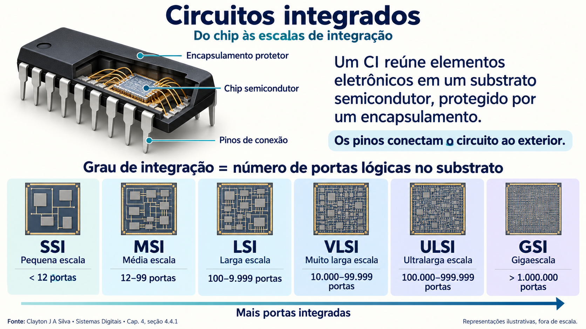
Os circuitos MSI mais comuns
A integração em média escala (MSI) permitiu reunir funções completas em um CI. No curso, o foco está nos blocos combinacionais: suas saídas dependem dos valores presentes nas entradas, após o tempo de propagação do circuito.
| Família | Função | Estudo no curso |
|---|---|---|
| Aritméticos | Executam operações como soma e subtração de palavras binárias. | Somadores binários, somadores BCD e subtratores neste capítulo. |
| Comparadores | Indicam as relações A > B, A = B e A < B. | Comparação de magnitude no capítulo 5. |
| Codificadores e decodificadores | Associam entradas a palavras de um código ou reconhecem palavras para ativar saídas. | Conversão e interpretação de códigos no capítulo 6. |
| Multiplexadores e demultiplexadores | Selecionam uma entrada para a saída ou encaminham uma entrada à saída selecionada. | Seleção e distribuição de dados. |
| Outros MSI | Contadores e registradores armazenam estado e realizam sequenciamento. | Pertencem ao estudo de circuitos sequenciais. |
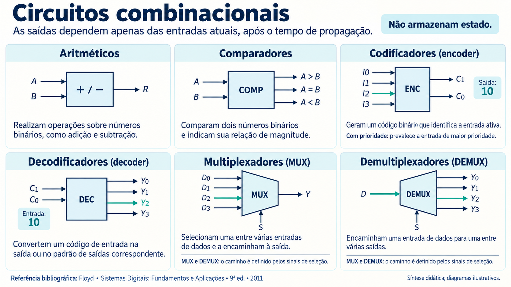
Circuitos aritméticos, lógicos e a ULA
Circuitos aritméticos tratam palavras como números e realizam soma, subtração e outras operações. Circuitos lógicos realizam operações como AND, OR, NOT e XOR, frequentemente bit a bit. Ambos podem ser construídos com portas lógicas.
Essas funções aparecem em componentes MSI e também são incorporadas à unidade lógica e aritmética (ULA) dos processadores. Uma ULA reúne blocos de cálculo e seleção do resultado conforme sinais de controle; ela não é, necessariamente, um CI separado. Em um processador integrado, essas funções fazem parte de um circuito de escala muito maior.
4.2 / Soma binária e meio-somador
Soma binária e meio-somador
Soma de dois bits
Somamos uma posição por vez, começando pelo bit menos significativo. A soma 1 + 1 produz 10: o bit da posição é 0 e o carry transportado à posição seguinte é 1.
| A | B | Soma de dois bits (Carry S) |
|---|---|---|
| 0 | 0 | 00 |
| 0 | 1 | 01 |
| 1 | 0 | 01 |
| 1 | 1 | 10 |
Processo de soma de palavras binárias
Na posição i, somam-se Ai, Bi e o carry Ci recebido da posição anterior. O resultado fornece Si e o novo carry Ci+1. Para uma soma sem transporte externo, C0 = 0.
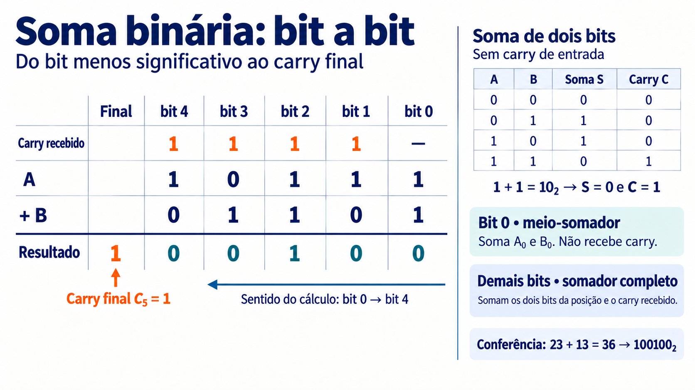
Meio-somador
O meio-somador recebe apenas A0 e B0. Ele é suficiente para a posição 0 quando não há carry de entrada. Suas saídas são o bit de soma S0 e o carry para a posição 1.
Carry = A0·B0
Nesta página, ~ precedendo uma variável indica negação lógica; · indica AND; +, nas expressões booleanas, indica OR.
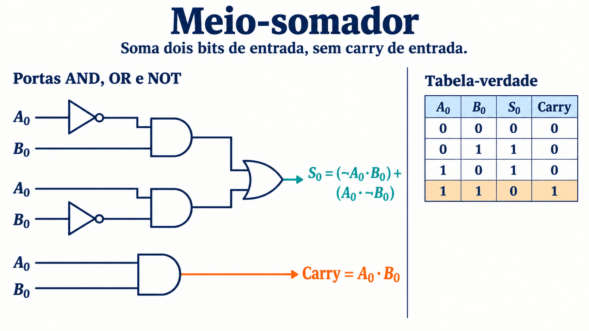
4.3 / Somador completo
Somador completo
O somador completo recebe três bits: A, B e Cin. Ele soma também o transporte recebido e gera S e Cout. O carry de saída vale 1 quando pelo menos duas entradas valem 1.
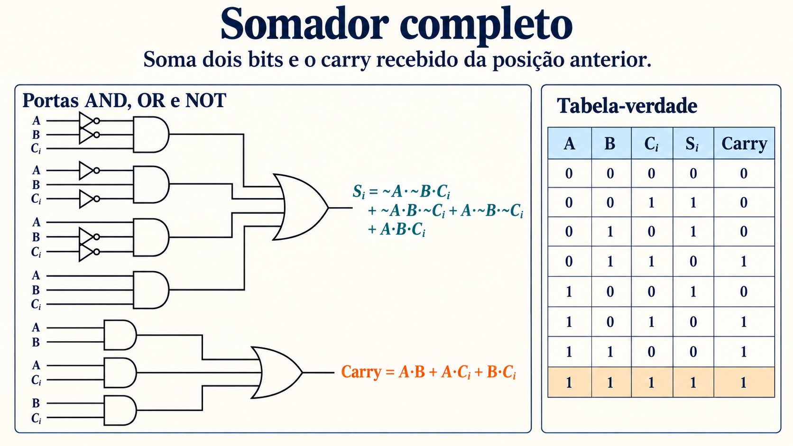
Cout = A·B + A·Cin + B·Cin
4.4 / Somador de n bits
Somador de n bits
Para somar duas palavras de n bits sem carry externo, conectamos um meio-somador na posição 0 e n − 1 somadores completos nas posições 1 a n − 1. O carry de cada estágio entra no seguinte; os bits Si permanecem em suas respectivas posições.
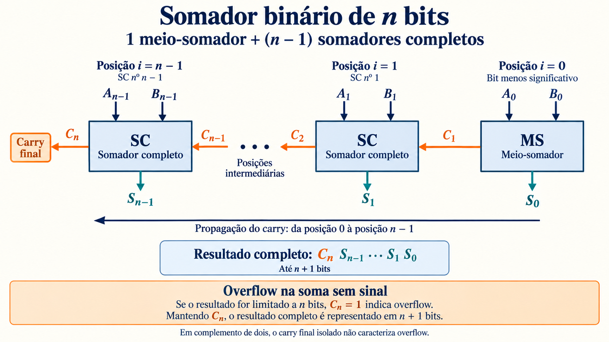
Se houver carry externo C0, usamos um somador completo também na primeira posição. Em uma cadeia simples, o resultado final só se estabiliza depois da propagação dos carries.
4.5 / Somador 74283: funcionamento e cascateamento
Somador 74283: funcionamento e cascateamento
A família 74283 implementa a soma binária de duas palavras de 4 bits com carry de entrada. As variantes 74LS283 e 74HC283 realizam essa função, mas pertencem a tecnologias diferentes; alimentação, níveis elétricos e temporização devem ser conferidos no datasheet da variante utilizada.
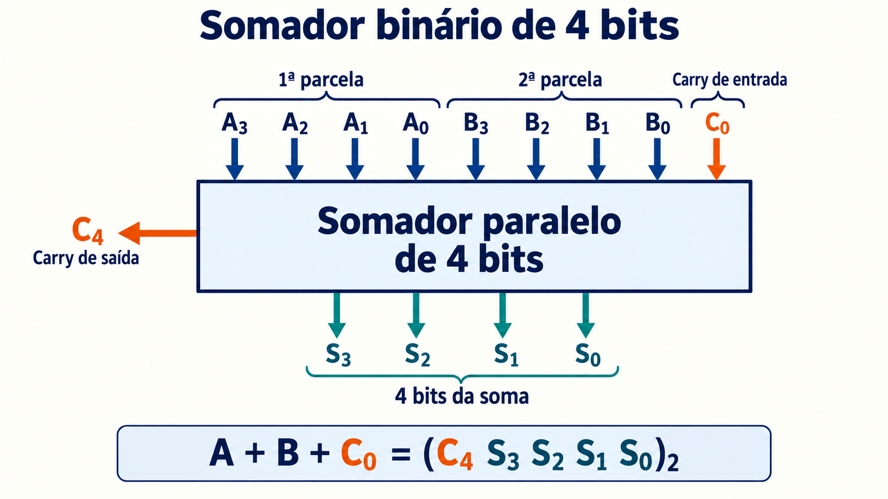
O circuito aceita todas as combinações binárias de 0000 a 1111 em cada operando. Ele não aplica correção decimal BCD. O 74LS283 possui antecipação interna de carry nos quatro bits, diferentemente de uma simples cadeia de portas que aguarda cada transporte sucessivamente. Consulte o datasheet da Texas Instruments.
Expansão para 8 bits
O bloco das posições 0 a 3 recebe C0; sua saída C4 é ligada à entrada de carry do bloco das posições 4 a 7. As oito saídas de soma formam S7…S0, enquanto C8 é o transporte final.
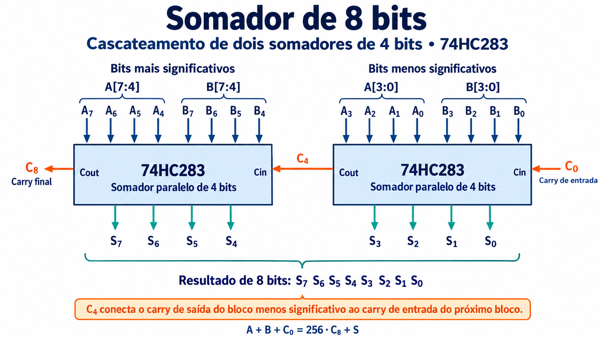
4.6 / Somador BCD: funcionamento e cascateamento
Somador BCD: funcionamento e cascateamento
No código BCD 8421, cada dígito decimal é representado por quatro bits. São válidas as palavras 0000 a 1001. Por exemplo, 25 é representado por 0010 0101: um grupo para o dígito 2 e outro para o dígito 5.
Um somador BCD de um dígito recebe A e B entre 0 e 9 e um carry de entrada entre 0 e 1. A soma pode variar de 0 a 19. A saída tem um dígito BCD de quatro bits e um carry decimal para a próxima posição.
Correção da soma binária
Calcula-se primeiro a soma binária T. Se T estiver entre 0 e 9, não há correção. Se T for maior que 9, acrescenta-se 0110 (6) aos quatro bits inferiores para obter o dígito BCD. A correção é necessária tanto quando os quatro bits excedem 1001 quanto quando a primeira soma gera carry binário.
6 + 7 = 13: 1101 + 0110 = 1 0011 → carry decimal 1, dígito 3
9 + 9 = 18: soma binária 1 0010; 0010 + 0110 = 1000 → carry decimal 1, dígito 8
No último exemplo, a correção dos quatro bits não gera um novo carry, mas o carry decimal permanece 1. Portanto, não basta observar apenas o transporte da segunda soma.
Exemplo de CI: Motorola MC14560B
O MC14560B é um somador decimal em BCD natural. A matriz resume a soma dos dígitos válidos para Cin = 0 e Cin = 1.
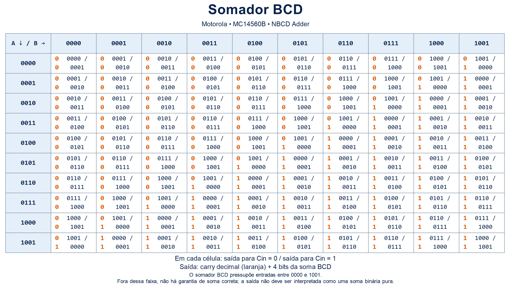
Entradas de 1010 a 1111 estão fora do código BCD. O CI produz níveis elétricos, mas não se deve interpretar essa resposta como uma soma binária pura. Consulte o datasheet Motorola MC14560B para as condições especificadas.
Cascateamento de dígitos
Um bloco soma as unidades, outro as dezenas e outro as centenas. O carry de cada bloco é transportado para a próxima posição decimal. Cada grupo de quatro bits continua representando um único dígito.
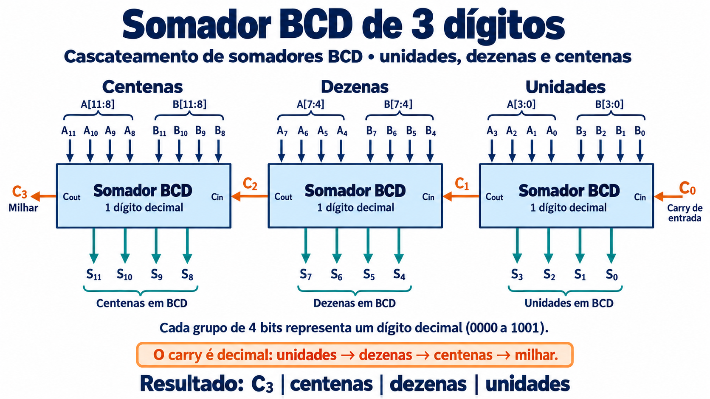
4.7 / Subtratores e complemento de 1
Subtratores e complemento de 1
Tabela de subtração de dois bits
Quando A = 0 e B = 1, é necessário pedir uma unidade à posição seguinte. Essa unidade vale dois na posição atual: 102 − 12 = 12. O sinal de borrow registra esse empréstimo.
| A | B | Diferença | Borrow |
|---|---|---|---|
| 0 | 0 | 0 | 0 |
| 0 | 1 | 1 | 1 |
| 1 | 0 | 1 | 0 |
| 1 | 1 | 0 | 0 |
Meio-subtrator: expressão e circuito
A saída DIF é o bit da diferença; BORROW sinaliza o empréstimo. A relação aritmética é A − B = DIF − 2·BORROW.
BORROW = ~A·B
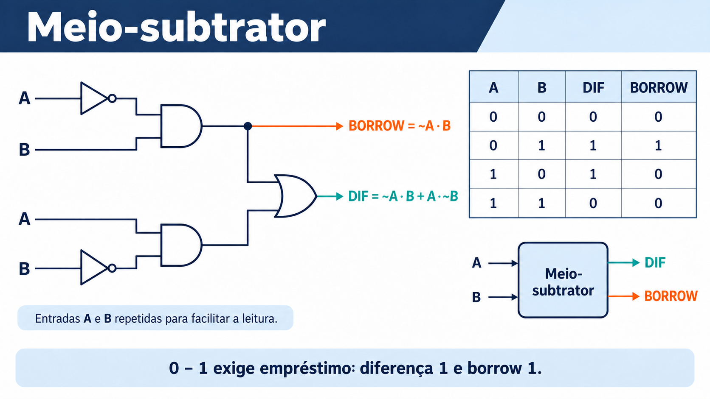
Subtrator completo
Nas demais posições, o subtrator também recebe Bin, o empréstimo solicitado pela posição menos significativa. Ele calcula A − B − Bin e produz DIF e Bout.
| A | B | Bin | DIF | Bout |
|---|---|---|---|---|
| 0 | 0 | 0 | 0 | 0 |
| 0 | 0 | 1 | 1 | 1 |
| 0 | 1 | 0 | 1 | 1 |
| 0 | 1 | 1 | 0 | 1 |
| 1 | 0 | 0 | 1 | 0 |
| 1 | 0 | 1 | 0 | 0 |
| 1 | 1 | 0 | 0 | 0 |
| 1 | 1 | 1 | 1 | 1 |
Bout = ~A·B + ~A·Bin + B·Bin
A dificuldade do empréstimo
Em uma operação como 1000 − 0001, o empréstimo atravessa várias posições que contêm zero. Um circuito direto precisa propagar esse pedido e levar em conta o empréstimo recebido em cada posição. Assim como ocorre com o carry, essa dependência contribui para o atraso de propagação.
É possível construir um subtrator de n bits com um meio-subtrator e n − 1 subtratores completos. Outra abordagem é reutilizar o somador, transformando a subtração em uma soma com o complemento do subtraendo.
Subtração por complemento de 1
Para calcular A − B, fixe a largura n dos operandos. O complemento de 1 de B é obtido invertendo todos os n bits: C1(B) = ~B.
- Calcule T = A + ~B, com carry de entrada igual a 0.
- Separe os n bits inferiores de T e o carry final Cn.
- Some sempre Cn aos n bits inferiores. Se Cn = 0, nada se altera; se valer 1, acrescenta-se uma unidade.
R = T[n−1:0] + Cn
Esse retorno do transporte à posição menos significativa é chamado de carry circular. Ele é uma segunda adição ao resultado parcial, não um 1 fixo colocado na entrada da primeira soma.
A = 0111 (7) B = 0011 (3) ~B = 1100
0111
+ 1100
------
1 0011 → carry final = 1
0011
+ 0001 → soma do carry circular
------
0100 = 4
Resultado negativo e zero
Para operandos A e B inicialmente interpretados como magnitudes sem sinal, se A < B não há carry final. Os n bits obtidos são o complemento de 1 da magnitude da diferença. Por exemplo, 3 − 7 produz 1011; invertendo esses bits, obtemos 0100, portanto a diferença é −4. O sinal deve ser interpretado com essa informação; o bit mais significativo sozinho não basta para toda a faixa de operandos sem sinal.
Se A = B, a operação produz 111…111, a representação de zero negativo no complemento de 1. Pode-se normalizá-la para 000…000. Quando as palavras são usadas como números com sinal em complemento de 1, a faixa é de −(2n−1 − 1) a +(2n−1 − 1), com duas representações de zero; resultados fora dessa faixa exigem tratamento de overflow.
Referências
Material de apoio
- Bibliografia da disciplina: Floyd, Sistemas Digitais: Fundamentos e Aplicações; Capuano, Sistemas Digitais: Circuitos Combinacionais e Sequenciais.
- Texas Instruments — 74283 / 74LS283, somador binário de 4 bits.
- Motorola — MC14560B, somador BCD.